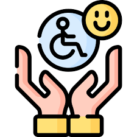

Bienvenido
Bienvenido a esta página web, un espacio creado con cariño para que todas las personas, sin importar sus capacidades o condiciones, puedan aprender y desarrollarse libremente. Aquí creemos que la educación es un derecho universal y que la tecnología puede ser una aliada poderosa para eliminar las barreras que separan a las personas del conocimiento.
En Bolivia, y especialmente en el municipio de Tupiza, muchas personas con discapacidad aún enfrentan dificultades para acceder a recursos educativos adaptados. Esta página web nace como una respuesta a esa realidad: un espacio digital donde la inclusión, la empatía y la oportunidad de aprender sean parte de cada clic. Aquí, cada persona tiene un lugar, una voz y la posibilidad de crecer.
Finalidad del Proyecto
El objetivo principal de esta página web es ofrecer contenidos y herramientas de aprendizaje accesibles para personas con diferentes tipos de discapacidad: visual, auditiva, motriz o cognitiva. Todos los materiales están pensados para adaptarse a las necesidades de cada usuario, haciendo del aprendizaje una experiencia más cómoda, sencilla y significativa.

Queremos que cada visitante sienta que aprender es posible, sin importar los obstáculos. La educación no debe tener límites, y esta página web busca demostrar que con apoyo, empatía y tecnología, todos podemos alcanzar nuestras metas.
¿Quiénes Participan de este Proyecto?
Estudiantes con Discapacidad
Son el corazón de esta página web. Cada color, cada función y cada palabra están pensados para que su experiencia de aprendizaje sea más accesible, agradable y útil. Sus aportes y sugerencias son fundamentales para seguir creciendo y mejorando día a día.
Familiares
Son el apoyo constante detrás de cada logro. Su acompañamiento y comprensión fortalecen el proceso de aprendizaje y hacen posible que esta página web cumpla su propósito de inclusión.
Docentes y Tutores
Son quienes guían, enseñan y adaptan los contenidos con empatía y compromiso. Gracias a su esfuerzo, esta página web puede ser un espacio útil para compartir conocimientos y promover una educación más humana e inclusiva.

Impacto Esperado
Con esta página web se busca reducir las brechas educativas, aumentar el acceso a la información y fomentar la autonomía de las personas con discapacidad. Queremos que cada usuario sienta que aprender no solo es posible, sino también emocionante y transformador.
Compromiso Social
Esta página web representa un compromiso con la inclusión, el respeto y la empatía. No se trata solo de enseñar, sino de construir un espacio donde todos tengan la oportunidad de aprender, compartir y ser escuchados. Juntos, podemos construir una educación sin barreras, donde cada persona tenga la oportunidad de brillar.